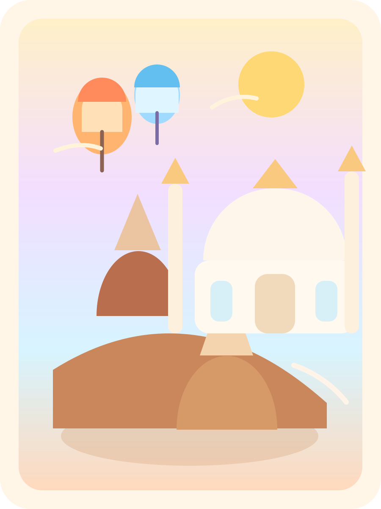
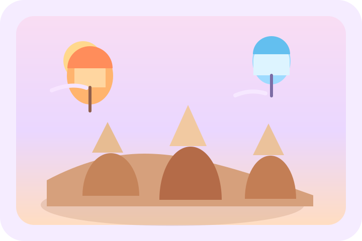
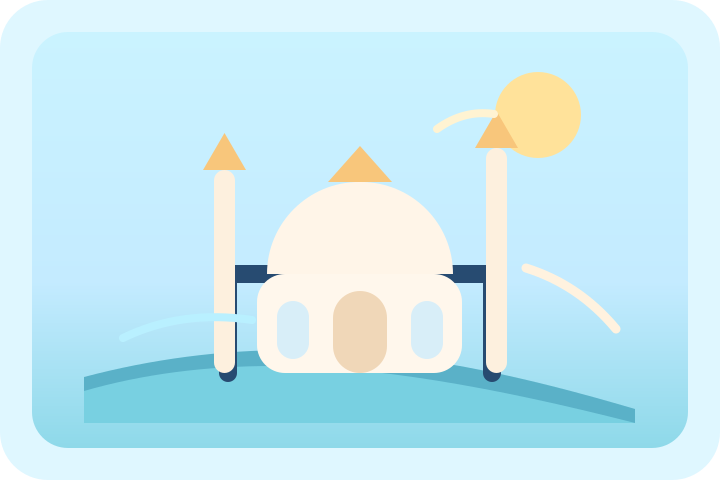

先搭文明地图
从安纳托利亚、爱琴海、小亚细亚出发，把 古希腊、罗马、拜占庭、奥斯曼串成一条时间线。
如果一趟旅行不只想“去到”，而是想真正“看懂”，那就从这里开始。 先认出它的文明脉络，再走近以弗所、卡帕多奇亚和伊斯坦布尔， 让每一天的预习，都把你往那片土地轻轻带近一点。

真正让一趟旅行变得动人的，往往不是打卡了多少地方， 而是当你站在现场时，心里已经能认出它为什么会在这里， 又曾经属于怎样的时代。所以这一页，会陪你沿着一条温柔的故事线慢慢走进去。
从安纳托利亚、爱琴海、小亚细亚出发，把 古希腊、罗马、拜占庭、奥斯曼串成一条时间线。
以弗所不只是废墟，它是一座还能读出秩序、知识、公共生活的罗马城市。
7 月 6 日会真正走进以弗所古城，所以这部分学到的每一眼，都会很快在现场对上。

卡帕多奇亚不只是热气球背景板，而是火山岩、地下城、岩窟教堂和避难史。
从 7 月 7 日到 7 月 8 日，你会在格雷梅、玫瑰谷和地下城之间，慢慢把这片地貌看立体。

伊斯坦布尔把拜占庭、奥斯曼和现代都市生活叠在一起，是整段旅程的压轴。
7 月 9 日到 7 月 10 日，圣索菲亚、蓝色清真寺和博斯普鲁斯海峡会把整条文明线一下子连起来。
真正的起点不是景点，而是知道这些地点分别处在什么文明阶段里。只有时间线先成立，后面的遗址、城市和地貌才不会碎掉。
这一站的重点不是“看了哪些遗迹”，而是读懂一座曾经繁荣的港口城市如何通过图书馆、剧场、街道和浴场组织公共生活。
主街道轴线、图书馆立面比例、大剧场尺度，以及遗址如何顺着地形展开。
这部分最容易被浪漫化，但真正有趣的是它如何同时承载火山地貌、洞穴生活、地下防御系统和早期基督教修行空间。
当以弗所和卡帕多奇亚分别把你带入古典城市与地貌文明之后，伊斯坦布尔会把拜占庭、奥斯曼和现代都市一起推到眼前。
穹顶与光、马赛克与书法并置、托普卡帕宫的院落结构、海峡如何把整座城市组织起来。
不需要一下子读很多。你只要在某一天里，打开一两个入口，记下几条感受， 让地图、遗址、穹顶、海峡和清晨的热气球一点点进入脑海。 等到真的出发时，这些地方就不会只是陌生名字了。
这些入口都放在这里，方便你当天顺手点开。Bilibili 或 YouTube 的搜索结果可能会变化，但这条学习路径会一直陪着你。
掌握到：能在地图上指出伊兹密尔 / 以弗所、卡帕多奇亚、伊斯坦布尔三大区域，以及它们分别代表什么。
掌握到：知道安纳托利亚是现代土耳其亚洲部分，也是东西文明长期穿行的陆桥。
掌握到：能按顺序说出古希腊、罗马、拜占庭、奥斯曼各自留下了什么。
掌握到：不是细节全懂，而是形成“这趟旅程到底从哪里到哪里”的整体感。
掌握到：知道为什么以弗所和伊兹密尔会成为希腊—罗马文明的重要区域。
掌握到：能理解一座罗马城市为什么会有剧场、图书馆、街道、浴场和广场。
掌握到：知道今天的伊斯坦布尔曾是君士坦丁堡，圣索菲亚为什么是拜占庭象征。
掌握到：知道奥斯曼如何把伊斯坦布尔变成帝国首都，以及它和拜占庭之间的转换关系。
掌握到：用一页纸复述希腊、罗马、拜占庭、奥斯曼分别代表什么。
掌握到：能说出圣索菲亚、蓝色清真寺、托普卡帕宫、博斯普鲁斯海峡为什么会一起出现。
掌握到：能用 3 分钟讲清楚土耳其为什么是东西方文明交汇点。
掌握到：记住塞尔苏斯图书馆、大剧场、主街道这 3 个核心画面。
掌握到：知道它为什么同时是港口、商业和宗教中心。
掌握到：理解它为何不仅是图书馆，更是纪念性立面和权力符号。
掌握到：知道剧场既是娱乐空间，也是公共政治和宗教集会空间。
掌握到：知道以弗所不只有罗马层，也有更早的希腊宗教传统。
掌握到：把英文信息转换成更有现场感的视觉预期。
掌握到：把现场重点收束成街道、柱廊、剧场、图书馆、浴场、神庙遗迹 6 个观察点。
掌握到：能回答以弗所为何重要，以及它如何体现罗马城市生活。
掌握到：知道火山灰、凝灰岩与长期风蚀如何共同塑造了卡帕多奇亚。
掌握到：能辨认蘑菇岩、峡谷、洞穴和岩壁空间的基本形态。
掌握到：知道当地人为什么能在岩石中开凿住所、教堂和储藏空间。
掌握到：知道地下城与避难、储粮、通风、防御之间的关系。
掌握到：把地下城的空间逻辑具体到你能说出 3 个实际设计细节。
掌握到：知道这里是岩窟教堂群，重点要看壁画、拱顶、圣像和空间比例。
掌握到：明白卡帕多奇亚为何与修士隐居、信仰实践和避难历史相关。
掌握到：知道热气球不是项目本身，而是一种从高空阅读地貌的方式。
掌握到：把现场重点收束成火山岩、洞穴、地下、壁画、峡谷、晨光 6 个关键词。
掌握到：能解释地貌为什么奇特，人又为什么会在这里建地下城市。
掌握到：知道欧亚交界和黑海—地中海通道为何让这座城市长期重要。
掌握到：能说出它经历了教堂、清真寺、博物馆再回到清真寺的转换。
掌握到：让穹顶、光线、阿拉伯书法圆牌与马赛克并置这几个画面真正落进脑子里。
掌握到：知道它是奥斯曼成熟阶段的代表，并与圣索菲亚形成空间对话。
掌握到：知道它不是欧洲式宫殿，而是院落、权力、礼仪与生活的复合系统。
掌握到：知道它既是地理边界，也是贸易、军事和景观轴线。
掌握到：知道现代伊斯坦布尔不只属于帝国历史，也属于街头、多元身份和当代文化。
掌握到：知道传统、世俗、宗教、全球化为何会在这里同时出现。
掌握到：知道大巴扎与香料市场是奥斯曼城市生活和贸易网络的重要组成。
掌握到：把穹顶、宣礼塔、瓷砖、庭院、海峡、市场、街道、猫这 8 个点写成现场观察清单。
掌握到：能回答它为什么是拜占庭、奥斯曼和现代生活叠层最复杂的城市。
掌握到：能按顺序说出：以弗所看罗马，卡帕看地貌与洞穴文明，伊斯坦布尔看拜占庭与奥斯曼。
掌握到：以弗所、卡帕多奇亚、伊斯坦布尔都能被你用 3 个词快速唤起。
掌握到：带着清晰问题出发，而不是在最后一天继续塞新内容。
前面这些章节更像是在陪你先把旅程看懂。真正进入每天打卡以后， 节奏不用很重，只要保持一点持续感，就会比一次性看很多更容易记住。
30–45 分钟
60–90 分钟
20–40 分钟